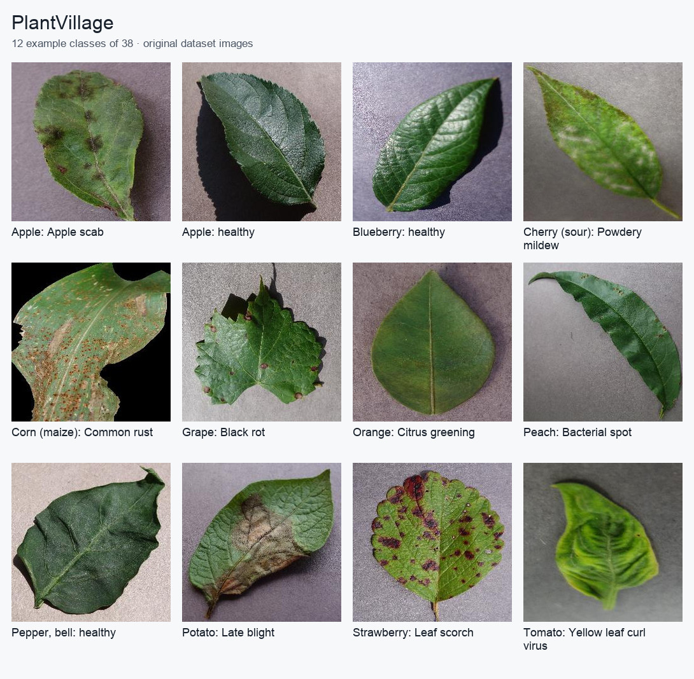

PlantVillage
Overview
PlantVillage is an image classification dataset of plant leaves, covering healthy leaves and a range of plant diseases across 38 categories.
This implementation uses the color images from the original PlantVillage
repository, using the color configuration. The dataset contains 54,305 images.


Dataset Information
Property |
Value |
|---|---|
Task |
Image classification |
Number of classes |
38 |
Total images |
54,305 |
Training images |
43,596 |
Test images |
10,709 |
Image format |
RGB color images |
Splits
The builder uses the authors’ published color-image 80/20 train/test split:
43,596 training images and 10,709 test images. Membership comes directly from
splits/color_train.txt and splits/color_test.txt in the authors’
mohanty/PlantVillage distribution. No validation split is provided.
These official lists preserve the authors’ leaf-group assignments. The builder matches their relative image paths against the GitHub archive without reshuffling, hashing filenames, or creating additional partitions. Archive entry order and repository-folder prefixes do not affect membership.
The authors’ leaf map does not identify every image. Images without an entry follow the official lists as published; this builder does not infer additional leaf identities. Tests verify separation of the identified leaf groups and exact agreement with both manifests.
The downloaded snapshot has 54,305 color images, although the upstream overview quotes 54,306. Counts here refer to the actual selected archive members.
Usage
from stable_datasets.images import PlantVillage
ds_train = PlantVillage(split="train")
ds_test = PlantVillage(split="test")
ds_all = PlantVillage(split=None)
print(len(ds_train))
print(len(ds_test))
Each example contains:
image: The plant-leaf image.label: An integer class identifier from 0 to 37.
Source
Original repository: https://github.com/spMohanty/PlantVillage-Dataset
Image archive: https://github.com/spMohanty/PlantVillage-Dataset/archive/refs/heads/master.zip
Official training manifest: https://huggingface.co/datasets/mohanty/PlantVillage/resolve/main/splits/color_train.txt
Official test manifest: https://huggingface.co/datasets/mohanty/PlantVillage/resolve/main/splits/color_test.txt
Class mapping
The following names define the stable zero-based class order:
0: Apple___Apple_scab
1: Apple___Black_rot
2: Apple___Cedar_apple_rust
3: Apple___healthy
4: Blueberry___healthy
5: Cherry_(including_sour)___Powdery_mildew
6: Cherry_(including_sour)___healthy
7: Corn_(maize)___Cercospora_leaf_spot Gray_leaf_spot
8: Corn_(maize)___Common_rust_
9: Corn_(maize)___Northern_Leaf_Blight
10: Corn_(maize)___healthy
11: Grape___Black_rot
12: Grape___Esca_(Black_Measles)
13: Grape___Leaf_blight_(Isariopsis_Leaf_Spot)
14: Grape___healthy
15: Orange___Haunglongbing_(Citrus_greening)
16: Peach___Bacterial_spot
17: Peach___healthy
18: Pepper,_bell___Bacterial_spot
19: Pepper,_bell___healthy
20: Potato___Early_blight
21: Potato___Late_blight
22: Potato___healthy
23: Raspberry___healthy
24: Soybean___healthy
25: Squash___Powdery_mildew
26: Strawberry___Leaf_scorch
27: Strawberry___healthy
28: Tomato___Bacterial_spot
29: Tomato___Early_blight
30: Tomato___Late_blight
31: Tomato___Leaf_Mold
32: Tomato___Septoria_leaf_spot
33: Tomato___Spider_mites Two-spotted_spider_mite
34: Tomato___Target_Spot
35: Tomato___Tomato_Yellow_Leaf_Curl_Virus
36: Tomato___Tomato_mosaic_virus
37: Tomato___healthy
Download, cache and RGB behavior
The builder downloads the two official split manifests and caches the shared GitHub image ZIP once. It reads selected members directly; no archive entries are extracted to the filesystem. The first load builds a processed cache per split. Repeated loads reopen it without downloading.
RGB images retain their original encoded bytes. Other modes, including a source RGBA PNG, are converted to RGB and encoded as lossless PNG (regardless of the original filename extension).
The defaults are ~/.stable-datasets/downloads and
~/.stable-datasets/processed. Override them explicitly with
download_dir=... and processed_cache_dir=.... STABLE_DATASETS_CACHE_DIR
can relocate the dataset cache root.
Attribution and usage terms
Attribute Mohanty, Hughes and Salathe (2016), Using Deep Learning for Image-Based Plant Disease Detection. The downloaded GitHub archive contains no explicit LICENSE file. The authors’ current Hugging Face card declares CC BY-SA 3.0, while its loader comments that the license should be verified. That card is not treated here as a definitive license grant for every file in the GitHub snapshot. Check the source’s applicable terms before redistribution. No dataset photographs are redistributed in this documentation.
@article{Mohanty2016PlantVillage,
title={Using Deep Learning for Image-Based Plant Disease Detection},
author={Mohanty, Sharada P. and Hughes, David P. and Salathe, Marcel},
journal={Frontiers in Plant Science},
volume={7}, year={2016}, doi={10.3389/fpls.2016.01419}
}